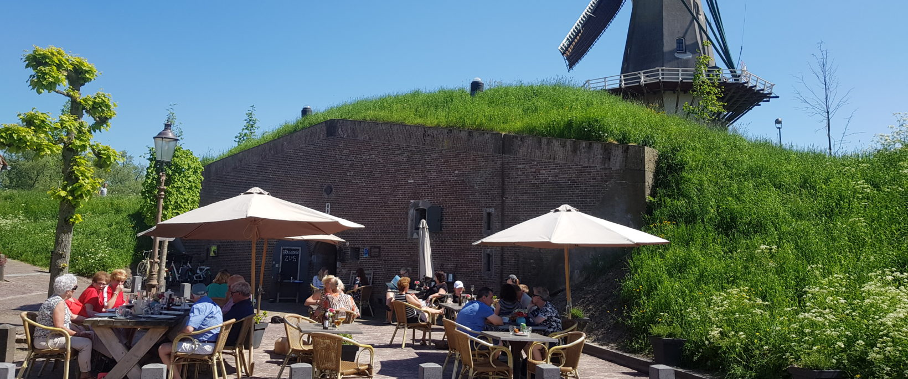
Koffie, lunch en een borrel in een kruitkelder
Brasserie Zus zit in een kazemat uit de 19e eeuw, aan het stille Arsenaal binnen de vesting van Woudrichem en onder molen Nooit Gedagt. Met huisgemaakte taart en een terras aan het plein.
Welkom bij Zus
Kom binnen voor een kop koffie of thee met een stuk huisgemaakte taart, of schuif aan voor de lunch. Rond borreltijd bent u ook van harte welkom, binnen onder de gewelven of buiten op het terras.
Openingstijden
- Donderdag11-17
- Zaterdag11-18
- Vrijdag11-17
- Zondag11-18
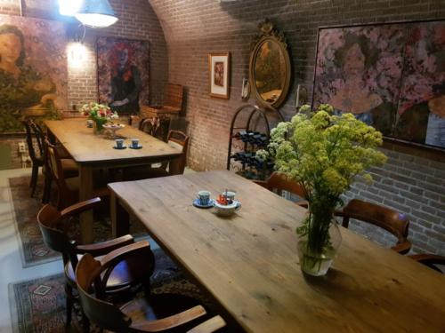
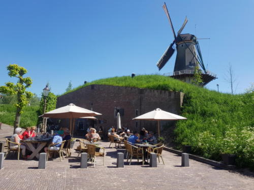
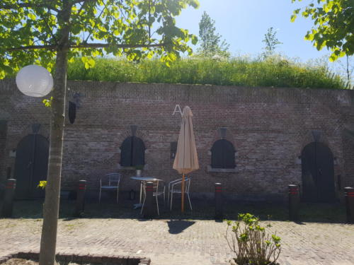
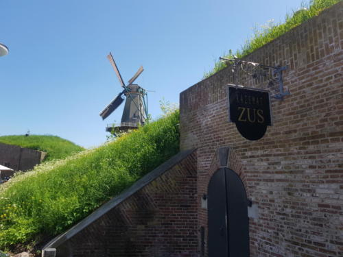
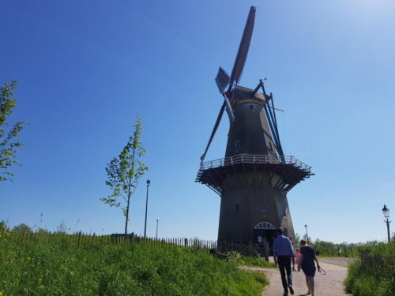
Een kazemat met een verhaal
Aan het Arsenaal, een stil pleintje binnen de vesting van Woudrichem, liggen in de aardwal twee kruitkelders. Ze zijn in de negentiende eeuw gebouwd voor de Nieuwe Hollandse Waterlinie. Dikke muren en meters aarde erbovenop hielden de bommen van toen tegen.
Nu zit in de ene kelder Brasserie Zus en in de andere Kazemat Zus, waar u kunt overnachten.
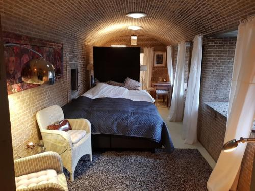
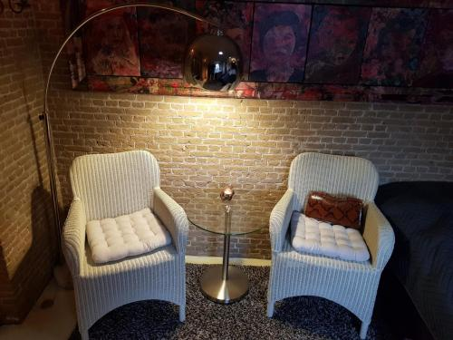
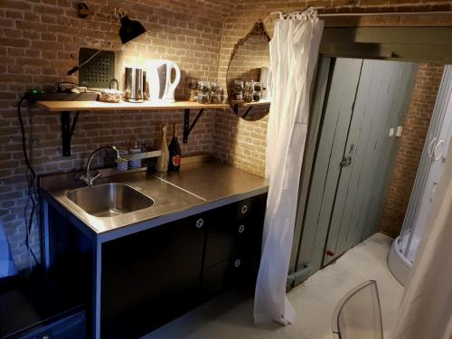
Slapen in Kazemat Zus
Een paar stappen van de brasserie ligt Kazemat Zus: een zelfstandig appartement in de tweede kruitkelder, met stijl ingericht en met volledige privacy. Door de dikke muren en de aarde boven u is het 's nachts doodstil.
- Eigen privéterras
- Twee fietsen te leen
- Douche, toilet en keukenblok
- Vloerverwarming
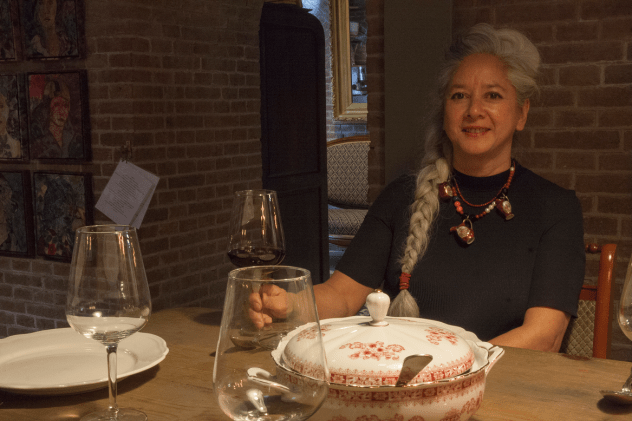
Wie is Zus?
Zus is de bijnaam van mijn moeder Celestine. Zij staat voor gastvrijheid en hartelijkheid.
Mijn naam is Esther Bousché. Sinds maart 2015 open ik de deuren van de kruitkelder in Woudrichem. Daarvoor heb ik 15 jaar op locatie gecaterd, en dat doe ik nog steeds: zeker in de wintermaanden kunnen bedrijven hun lunch bij ons bestellen en laten bezorgen.
Even een rondje over de vesting
Zus ligt binnen de vesting van Woudrichem. Over de wal loopt u zo langs de rivier, en daarna wacht er koffie en taart.
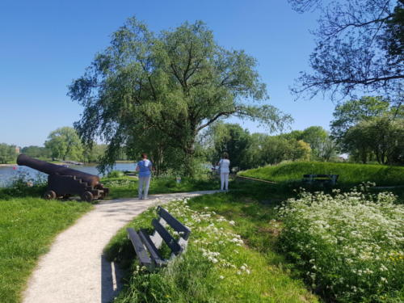
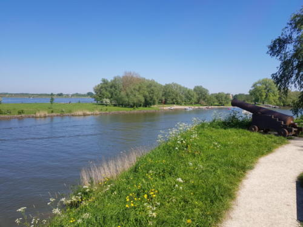
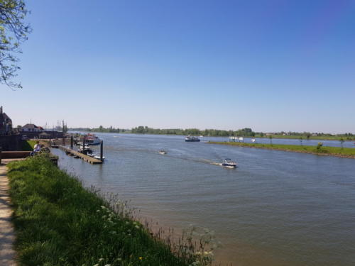
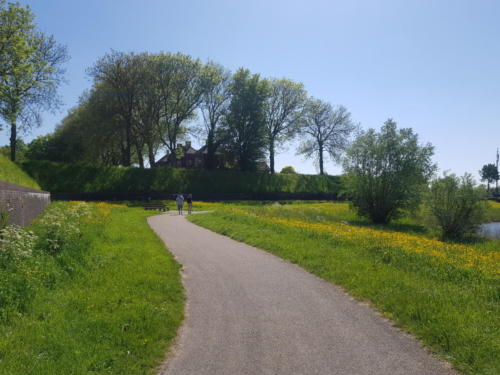
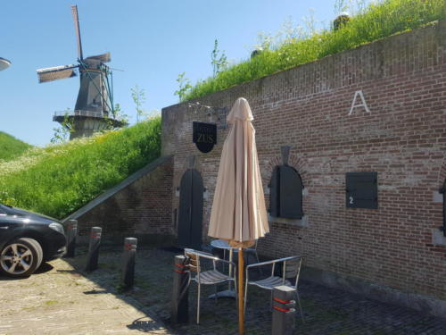
Reserveren of langskomen
Wilt u een tafel reserveren, Kazemat Zus boeken of een lunch laten bezorgen? Bel of stuur een bericht.
Even bellen?
Voor een tafel, een overnachting of een lunch op locatie.